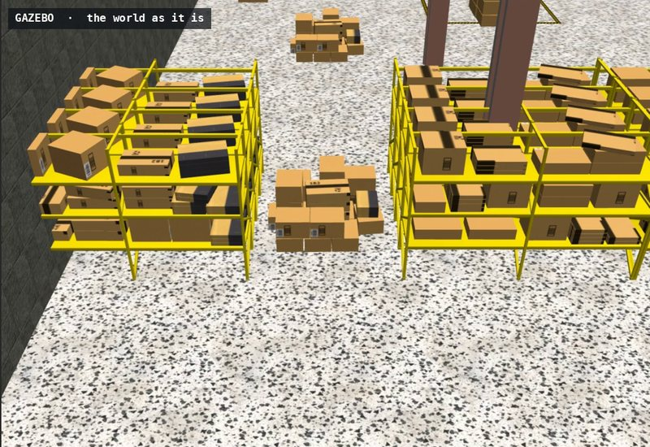
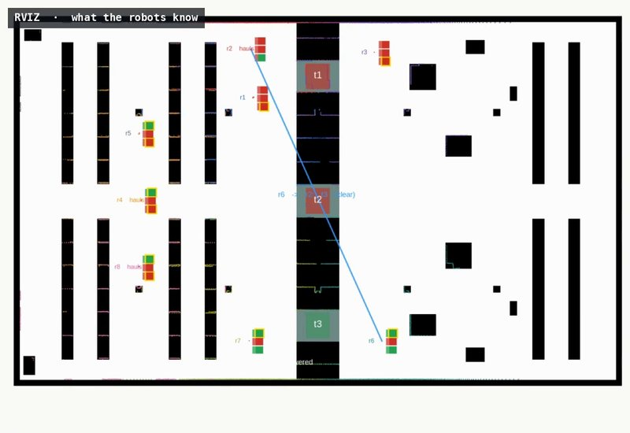
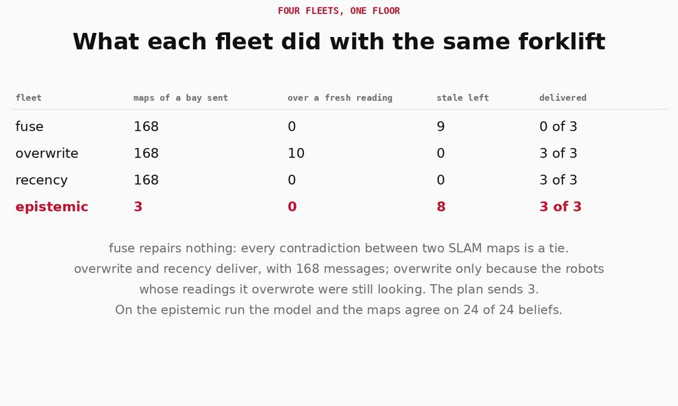
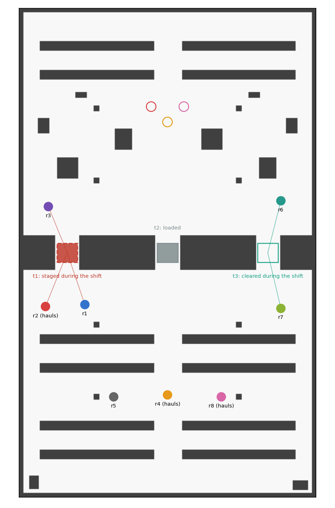
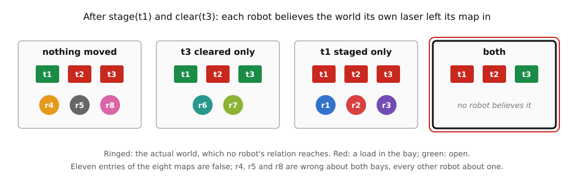

Epistemic SLAM · belief update · eight robots · pass-through floor · ROS 2
Eight robots begin the shift holding the same map of the pass-through floor: bay t1 open, a load in each of t2 and t3. During the shift a forklift stages a load in t1 and takes the load out of t3. A robot's laser sees a change only when its station has a sight line into the bay, and no station sees both. Every other robot keeps the static-world assumption its occupancy map is built on, maps the change onto nothing having changed, and holds a map that is now wrong without knowing it. After the forklift eleven entries of the eight maps are false, and no robot holds a current map of both bays. Three haulers must then take loads through the racking, and a hauler crosses a bay only if the bay is open and its map says so.
What a map sent from one robot to another should do to the receiver depends on what the receiver believes the sender saw. A reading that contradicts the receiver's map is news that the bay changed when the sender saw a change the receiver missed, and a stale reading to ignore when the receiver saw a change the sender missed. The domain draws that line with a belief about a belief: a robot sends its map of a bay only to a robot it believes holds the opposite, and the receiver takes the reading as an update. The planner sends three maps. Three fleets that share every map of every bay send 168, and the one that merges them with the fusion this repository has repairs nothing.
The model is built from the floor: who sees each change is decided by casting rays over the floor plan, and every run checked that the change was read on exactly those robots' maps and on no other. A map is a belief of the robot that made it, and a map sent carries \(B_i\varphi\), not \(\varphi\). Robots localise by odometry, as on every floor here; the SLAM is mapping with known poses over a prior that goes stale.
Package stale_map_demo; policy from eplansys, grounding by plank, search by Aletheia. Full account in Maps That Go Stale (PDF): the model, the propositions and their proofs, the planning and scaling tables, the four runs and the defects found on the way.
The runs
| fleet | maps sent | merged by | maps of a bay sent | over a fresh reading | stale after the exchanges | delivered |
|---|---|---|---|---|---|---|
| fuse | every map of every bay to every other robot | the more confident reading | 168 | 0 | 11 | none |
| overwrite | the same | the sender's | 168 | 10 | 0 | r2, r4, r8 |
| recency | the same | the later observation | 168 | 0 | 0 | r2, r4, r8 |
| epistemic | the radio policy's | the later observation | 3 | 0 | 8 | r2, r4, r8 |
| action | what the run reported | model after |
|---|---|---|
| plan | a policy of 8 steps, by replanning in 8 expansions | 1 world |
| clear(t3) | the load taken out of t3; read clear by r6 and r7, by their own lasers, after 3.7 s; every other map unchanged | 2 worlds |
| stage(t1) | a load staged in t1; read blocked by r1, r2 and r3 after 1.8 s; every other map unchanged | 4 worlds · 11 stale entries |
| send-open(r6, r2, t3) | r6's map of t3 to r2: 374 cells replaced, none kept against it; r2 read t3 blocked, now clear | \(B_{r2}\neg\mathit{blocked}(t_3)\) |
| cross(r2, t3) | r2 through t3 to its drop: delivered after 88 s, 46.6 m | |
| send-open(r2, r4, t3) | r2 relays it to r4: 374 cells replaced | \(B_{r4}\neg\mathit{blocked}(t_3)\) |
| cross(r4, t3) | delivered after 79 s, 40.9 m | |
| send-open(r2, r8, t3) | r2 relays it to r8: 374 cells replaced | \(B_{r8}\neg\mathit{blocked}(t_3)\) |
| cross(r8, t3) | delivered after 86 s, 43.2 m | 8 stale entries left |
| check | the model and the maps agree on 24 of 24 beliefs: for every robot and bay, the epistemic state's answer to whether the robot believes it blocked, open or neither matched the robot's map |
| action | what the run reported | maps after |
|---|---|---|
| forklift | as above: t3 read clear by r6 and r7, t1 read blocked by r1, r2 and r3, every other map unchanged | 11 stale entries |
| 168 sends | every robot's map of every bay to every other robot, merged by epistemic_slam::fuse's rule: not one settled cell replaced; when r2 sent r6 its stale t3, 374 cells were kept against it | 11 stale entries |
| haul r2 | its map shows every bay blocked: no route | |
| haul r4 | a route of 43.9 m through t1, which its map shows open; its laser reads the load in t1 after 21.3 m, and t3, the open bay, is blocked on its map: no route | |
| haul r8 | the same, after 14.9 m | none delivered |
What the runs show

The forklift A stale map is a false belief An unseen change maps onto nothing having changed. After the forklift the model has four worlds, each robot believes the one its own laser left its map in, and none believes the actual one. See the model →
A map sent An update, sent to whoever needs it Taken as fact, a contradicting map leaves the receiver believing everything. Taken as news that the bay changed, it is an update; and a robot sends it only where it believes the receiver's map is stale. See the update →
Four fleets 168 messages, or 3 The fusion this repository has keeps every stale cell, since 0 against 100 is a tie. Overwriting and timestamps deliver with 168 messages; the plan delivers with 3. See the fleets →The floor

The hall, the racking block and its three bays are the pass-through floor's. tools/check_floor.py stations the eight robots and checks the domain's claims on the floor plan before anything runs, by casting rays over the occupied cells with the other robots standing at their stations, or by flooding the plan inflated by the driver's 0.35 m. A staged load is in view of a station with at least fifteen of its cells or with none, and a cleared bay with every cell the load covered or with none: a station that saw part of a cleared bay would hold a reading neither the shift map's nor the floor's. t1 is seen by r1, r2 and r3, t3 by r6 and r7. A hauler with a current map reaches its drop through t3 and no other bay; with the shift map, through t1. r2 sees t1 staged and not t3 cleared, so its map shows no bay open at all; r4 and r8 see neither, and their maps send them to t1.
The domain
tools/stale_maps.py writes the domain and four floors for any fleet. The atoms are \(\mathit{blocked}(t)\) for each bay, the static \(\mathit{sees}(i,t)\), whether robot \(i\)'s station sees bay \(t\), \(\mathit{hauls}(i)\), \(\mathit{delivered}(i)\), the forklift's schedule, and two that tell the floors apart, \(\mathit{radio}\) and \(\mathit{doubts}\). At the start every robot holds the shift map, and the initial model is one world, all of it common knowledge, the stations included: the fleet's positions are known. Whether the forklift used its slots is not.
| action | type | events | observers |
|---|---|---|---|
| stage(t), clear(t) | change | the change; the slot passing with nothing changed | Fully where \(\mathit{sees}(i,t)\), Oblivious elsewhere |
| send-open(i, j, t) | map report | the report; the change it implies, applied where \(j\) believes the old state; nothing | \(i\) Fully, \(j\) Recipient, the rest Oblivious |
| look(i, t) | private sensing | open; blocked | \(i\) Fully, the rest Oblivious; doubting floor only |
| cross(h, t) | private ontic | \(\mathit{delivered}(h)\) | \(h\) Fully, the rest Oblivious |
The preconditions carry the epistemic content:
\[ \mathit{send\text{-}open}(i,j,t):\ B_i\,\neg\mathit{blocked}(t)\ \wedge\ B_iB_j\,\mathit{blocked}(t) \qquad \mathit{cross}(h,t):\ \neg\mathit{blocked}(t)\ \wedge\ B_h\,\neg\mathit{blocked}(t) \]A robot sends what its map says, which is what it believes, and sends it only to a robot it believes holds the opposite. The goal of the radio floor is that every hauler has delivered; the resync floor asks instead that every robot believe every bay as it is. Two floors more change two lines: without a radio, and with robots that know their maps may go stale, for whom an unseen change is doubtful, not invisible.
After the forklift

After the forklift, for every robot \(i\) and bay \(t\), \(B_i\,\mathit{blocked}(t)\) holds at the actual world exactly when \(t\) is blocked in the shift map with the changes \(i\)'s station sees applied, and \(B_i\,\neg\mathit{blocked}(t)\) otherwise. On this floor, where no station sees both changes, no robot's relation reaches the actual world, and the frame is no longer S5.
So the model gives every robot exactly the map its station leaves it, which the validator checks robot by robot, and on the floor the same partition was read off the robots' own living maps in every run. Beliefs about other robots' maps are stale too: fifteen of the 56 beliefs the robots hold about each other's map of t1 are false, and twelve about t3. r1 saw t1 staged and not t3 cleared, and believes r6's map shows t3 blocked; it shows t3 open.
A map sent
If \(j\) believes \(\mathit{blocked}(t)\) and is privately told \(\neg\mathit{blocked}(t)\), the others oblivious, then after the update \(j\)'s relation is empty at the actual world, and \(j\) believes every formula.
This is what fusing a received map as a fact does to a robot whose map says otherwise, and the validator shows it on r4. The map report relates the report to the change it implies, applied to the worlds the recipient believes, so r4 takes the reading as news that t3 was cleared after its map was made.
If \(B_i\neg\mathit{blocked}(t)\) and \(B_iB_j\,\mathit{blocked}(t)\) hold and \(j\) does believe \(\mathit{blocked}(t)\), then after \(\mathit{send\text{-}open}(i,j,t)\) the recipient believes \(\neg\mathit{blocked}(t)\), its relation is serial, its beliefs about every other bay are what they were, and so are the beliefs of every robot but \(i\) and \(j\).
That is an update in the sense of Katsuno and Mendelzon, not a revision: r4's map was right when it was made. The action type is the false-belief demonstration's report, generalised to a fleet with the other robots oblivious. That page lists belief revision among what it does not show; a stale map is a case in which update, not revision, is the right answer, and the logic needs nothing beyond \(\mathrm{KD45}_n\) to give it.
After the forklift, a robot whose map has bay \(t\) wrong can send its reading of \(t\) to no robot: it believes that every robot's map agrees with its own about \(t\), so the conjunct \(B_iB_j\) of the opposite fails for every \(j\).
A robot that missed the change believes the forklift's slot passed with nothing moved, and in that world every robot saw the same. So a stale reading is never sent, and in particular never over a fresh one. The validator checks the case: r4's stale t1 cannot be sent to r2, whose map is fresh.
Planning
The four floors grounded by plank and solved by Aletheia, consistent beliefs required, and every policy replayed by tools/trace.py. Eight checks, run by tools/validate.sh without a simulator:
| check | result |
|---|---|
| FLOOR | the floor's three claims hold |
| STALE | after the forklift every robot believes exactly the map its station leaves it, and 11 entries are false |
| RADIO | clear(t3), stage(t1), send-open(r6, r2, t3), cross(r2, t3), send-open(r2, r4, t3), cross(r4, t3), send-open(r2, r8, t3), cross(r8, t3) |
| GUARD | send-open(r4, r2, t1), r4's stale t1 to r2, does not apply |
| COLLAPSE | a plain announcement to r4 that t3 is open leaves r4 with no world |
| SILENT | without a radio there is no policy |
| DOUBT | robots that know maps go stale hold no false belief after the forklift, only uncertainty, and the policy sends each hauler to look at t3 |
| RESYNC | every map brought up to date with 11 messages, one per stale entry |
The radio policy leaves eight entries stale: nothing requires r1, r3, r5, r6 and r7 to have current maps, and no message is spent on them. The relay is the planner's: r6 tells r2, and r2, now believing t3 open and believing r4 and r8 hold the shift map's reading, tells them.
A map report changes the recipient's belief about one bay, and no robot's belief about any other bay. A policy that makes every robot believe every bay as it is sends at least one report per stale entry, and the resync policy sends exactly that many.
Many robots
tools/scaling.py draws random fleets, each robot seeing each changed bay with probability 0.3 and a third of them hauling, and solves the radio and resync floors. Three seeds per size. Times are the planner's, on eight cores of sixteen, while another session's simulations ran on the rest.
| robots | haulers | stale entries | radio: maps sent | resync: maps sent | time | broadcast |
|---|---|---|---|---|---|---|
| 4 | 1 | 5 to 6 | 0, or no policy | 5, or no policy | 0.01 s | 36 |
| 8 | 2 | 10 to 13 | 2 | one per stale entry | 0.1 to 3 s | 168 |
| 16 | 5 | 19 to 24 | 2 to 5 | one per stale entry | 1 to 3 s | 720 |
| 32 | 10 | 43 to 52 | 7 to 10 | one per stale entry | 41 to 104 s | 2976 |
| 64 | 21 | 91 to 97 | none in 600 s | none in 600 s | 600 s, the budget | 12096 |
Wherever there is a policy, resync sends exactly one message per stale entry, and radio a handful, only to haulers. Two of the four-robot fleets have no policy, correctly: nobody saw t3, so no robot can come to know it is open. The search does not scale as far as the counts do. The model is not what grows: after the forklift it has four worlds whatever the size of the fleet. What grows is the number of ground actions, \(N(N-1)\cdot 3\cdot 2\) map reports, 24 192 at 64 robots, over which the planner finds no policy within its budget.
On the floor
Each robot runs a living map: the shift map, every cell observed at time zero, into which each scan of the robot's own laser is cast from its pose as log-odds evidence, each cell stamped with when it was last observed and the other robots masked out. A map sent carries the region's cells and their observation times, and the receiver merges by its rule:
| rule | a cell both robots have settled, read differently |
|---|---|
| confidence | the reading further from 50, a tie keeping the receiver's: epistemic_slam::fuse's rule |
| overwrite | the sender's |
| recency | the one observed later |
A SLAM map writes its settled cells as 0 and 100, so under the confidence rule every contradiction between two maps is a tie and the receiver keeps its own. That rule never repairs a stale map, and the fuse fleet, which shares every map with it, delivers nothing. tools/fleets.py said what each fleet would do before it ran, by replaying the exchanges and then driving each hauler along its route over the floor plan, its map updated wherever the route brings a change into sight; the mission failed any run that did otherwise, and none did.
Overwrite delivers, but only because the robots that saw the changes were still looking: ten times a stale reading was written over a fresh one, and each time the robot's own laser read the bay again within seconds. With those robots no longer looking (fleets.py --transient) the first sender's stale t3 cascades through the fleet, and no hauler delivers. Recency delivers with nothing overwritten: the observation times do mechanically what the update does. What they do not do is say who needs a map. The plan sends three where recency sends 168.
Defects
Limits
References
Reproduction
ros2 launch stale_map_demo stale_maps_launch.py # fleet:=epistemic ros2 launch stale_map_demo stale_maps_launch.py fleet:=fuse # also overwrite, recency bash tools/validate.sh # eight checks, no simulator python3 tools/fleets.py # what each fleet will do python3 tools/fleets.py --transient # the same, observers gone python3 tools/scaling.py --robots 8 16 32 64 --seeds 1 2 3 python3 tools/check_floor.py --maps maps --plot docs/floorplan.png bash tools/record_demo.sh epistemic /tmp/raw.mkv /tmp/run.log